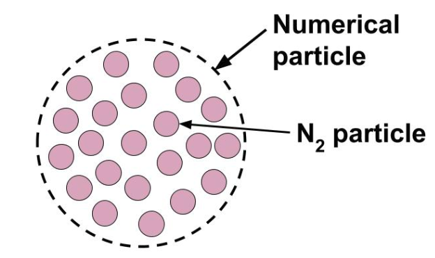
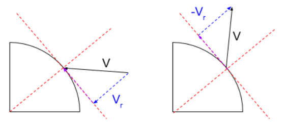

Théorie
Rentrée atmosphérique d'un objet en raréfié
Introduction et contexte
Présentation du problème et de ses enjeux
La rentrée atmosphérique est la phase durant laquelle un objet va atteindre des couches denses de l'atmosphère et qui doit lui permettre de perdre la totalité de sa vitesse pour rejoindre le sol en sécurité. En orbite à l'altitude de la Station Spatiale Internationale (400 km), la vitesse orbitale est de 7,7 $km.s^{-1}$. Son énergie cinétique extrêmement importante doit alors être convertie en énergie thermique, ce qui produit un flux de chaleur de plus d'un méga-watt et endommage l'objet qui doit donc être protégé par un bouclier thermique. Si l'intégrité physique de l'objet doit être la priorité lors de sa mise au point, il est nécessaire de limiter la masse du bouclier thermique qui doit être envoyé dans l'espace. Une étude précise des contraintes doit être faite. Pour ce projet, seule la phase de rentrée durant laquelle l'objet se trouve dans la zone de gaz raréfié est étudiée, à environ 120km d'altitude dans la troposphère.
Choix du modèle
La densité à 120km d'altitude est un dix-millième de la densité au niveau de mer. Cela implique que la distance entre les molécules de gaz est beaucoup plus importante. La distance moyenne parcourue par les molécules entre deux collisions au niveau de la mer est de 68 nm contre 10cm à 120km d'altitude. Cette distance entre deux collisions comparée à la longueur caractéristique de l'objet caractérise le fait que le milieu puisse être considéré comme continu ou non. Le ratio entre ces deux longueur est donné par le nombre de Knudsen qui vaut dans ce cas 0.1 et caractérise un milieu non continu Comme les équations de Navier-Stockes ne sont valables que sous l'hypothèse d'un milieu continu, elles ne peuvent pas être utilisées pour notre cas. Un modèle discontinu, considérant des groupes de molécules va donc être utilisé.
Théorie
Présentation de la littérature et du cas test
Equation de Boltzmann
L'équation de Navier-Stokes n'étant pas valable dans le cas considéré, une méthode particulaire a été utilisée. Dans cette approche du problème, le fluide est représenté par un très grand nombre de particules de gaz. Pour décrire le comportement de ces particules, on introduit la fonction de distribution f, qui est la densité de masse de gaz par unité de volume. Ainsi, intégrée sur un volume, cette fonction donne la masse de gaz présent dans ce volume :
\[\int_{V_x} \int_{v\in R^3} f(t,x,v) = \text{nombre de particules dans le volume}~V_x \]
On peut montrer que le mouvement des particules est décrit par l'équation de Boltzmann :
\[\partial_tf+v\nabla_x f=Q(f,f)\]
avec v la vitesse de la particule et Q est appelé opérateur de collision.
Ainsi, on peut remarquer que si l'on ne considère pas l'opérateur de collision, l'équation se transforme en une équation de propagation classique :
\[\partial_tf+v\nabla_x f=0\]
L'ajout de l'opérateur Q permet donc de prendre en compte les collisions entre les particules. Il existe une expression précise de l'opérateur de collision. Mais celui-ci rend l'équation complexe à résoudre numériquement. Il a donc été décidé d'utiliser un modèle permettant de simplifier cet opérateur : le modèle BGK.
Modèle BGK
Il a été démontré (cf cours Luc Mieussens) que la répartition des particules d'un gaz va tendre vers un état d'équilibre représenté par une distribution dite Maxwellienne. La distribution Maxwellienne est une fonction gaussienne centrée sur une vitesse moyenne u et d'écart type RT, dont voici l'expression :
\[M(t,x,v)=\frac{\rho}{\sqrt{2 \pi RT}} exp\left(\frac{(u-v)^2}{2RT}\right)\]
avec $\rho$ la densité du fluide, R la constante des gaz parfait (Ou plutôt de notre gaz ?), u la vitesse moyenne du fluide, T la température et $\tau$ le temps caractéristique du phénomène de convergence vers l'état d'équilibre.
Ainsi, la convergence de la fonction de distribution vers cette Maxwellienne est la base du modèle BGK. En effet, en posant comme opérateur de collision :
\[Q(f,f)=\frac{1}{\tau}(M(f)-f)\]
on obtient ainsi la convergence de la fonction de répartition vers la Maxwellienne.
Le modèle ainsi construit est plus simple à résoudre numériquement que le problème de départ et permet tout de même de modéliser le comportement d'un gaz raréfié avec une bonne précision.
Particules numériques et collisions
Bien que l'on considère un gaz raréfié, la simulation de chacune des particules du domaine engendrerait, un temps de calcul considérable. Ainsi on introduit la notion de particule numérique pour notre modèle. Chaque particule numérique représente un ensemble de particules de N2. Elle sont représentées par un poids numérique $\omega_i$ :
\[\omega_i =\frac{\rho V_M}{N}\]
Ce poids numérique dépend de plusieurs paramètres de la maille : $N$ représente le nombre de particles présentent dans la maille, $V_M$ son volume et $\rho$ la densité.
 Chaque particule numérique est implémentée avec sa propre vitesse initiale. Deux particules peuvent donc entrer en collision ce qui modifiera leur vitesse. Il est nécessaire de simuler ce phénomène afin de prendre en compte son impact sur les propriétés de l'écoulement. Pour simplifier le problème et gagner en temps de calcul, les collisions entre particules ont été simplifiées. En effet, il est compliqué de connaître avec exactitude les trajectoires de toutes les particules pour prendre en compte leurs collisions.
Il a donc été choisi d'utiliser un modèle probabiliste : les particules qui collisionnent sont choisies aléatoirement. Cela facilite grandement la résolution. En effet, à chaque pas de temps, les particules se déplacent sans interaction les unes avec les autres, puis de manière probabiliste sont effectuées les collisions. Ainsi, il n'y a pas corrélation entre le déplacement des particules et les collisions, ce qui simplifie la résolution.
De plus, lors d'une collision, la grandeur qui est impactée est la vitesse des particules. Les nouvelles vitesses des particules ayant collisionnées seront elles aussi déterminées de façon probabiliste. La nouvelle vitesse sera déterminée selon une maxwellienne centrée autour de la vitesse moyenne de la maille.
Néanmoins, pour être au plus proche des phénomènes physiques, certains paramètres doivent être fixés de la manière suivante :
- Les collisions ont lieu tout les 10 pas de temps
- Dans chaque maille, la proportion de particules qui collisionnent est de 10 %
Lors des collisions, la nouvelle vitesse des particules étant déterminée de manière probabiliste, la vitesse dans la maille ne sera pas la même avant et après les collisions. Ceci ne correspond pas à la réalité physique puisque qu'il n'y a pas conservation de la quantité de mouvement. Ainsi, pour conserver la quantité de mouvement, une transformation linéaire va être faite sur les vitesses des particules. (toutes les particules de la maille ou seulement celles qui ont collisionnées ?)
L'objectif de la transformation linéaire est de modifier la vitesse après collision de façon à conserver la quantité de mouvement ainsi que la température dans la maille. On note $X_i$ et $Y_i$ les vitesses de chacune des particules i. La nouvelle vitesse après transformation va s'écrire $Y'_i=aY_i+b$ avec a et b à déterminer.
La conservation de la quantité de mouvement sur l'ensemble des particules d'une maille donne donc :
\[E(Y')=aE(Y)+b=E(X).\]
De même, la conservation de la température dans la maille donne :
\[Var(Y')=a^2 Var(Y)=Var(X).\]
Le lien entre la variance de la vitesse des particules et la température dans la maille est mis en évidence dans la partie suivante.
Ainsi, avec ces deux conditions, on obtient les coefficients a et b. Cela permet ensuite de calculer des vitesses après impact qui soient cohérentes avec le modèle physique.
Calcul des propriétés physiques dans les mailles
Une fois les positions des particules mise à jour, la masse volumique, la vitesse moyenne ainsi que la température de chaque maille peuvent être elles aussi actualisées. Pour ce faire, il existe des formules permettant de faire le lien entre ces grandeurs et le nombre de particule par maille. Ainsi, la masse volumique s'écrit :
\[\rho_M=\sum \limits_{i \in M}\frac{\omega_i}{V_M},\]
avec $V_M$ le volume de la maille et $\omega_i$ le poids numérique de chacune des particules. Dans le cas présent, le poids numérique est identique pour toutes les particules. La vitesse moyenne dans les maille s'écrit simplement :
\[u_M=\frac{1}{n_{part}}\sum \limits_{i \in M} v_i,\]
avec $n_{part}$ le nombre de particules dans la maille et $v_i$ les vitesse de chacune des particules. Une fois cette vitesse moyenne obtenue, on peut ainsi calculer la température grâce à la formule suivante :
\[T_M=\frac{1}{3Rn_{part}}\sum \limits_{i \in M} (v_i-u_M)^2,\]
avec R la constante des gaz parfaits.
On voit ici de manière assez clair le lien décrit précédemment entre la variance de la vitesse des particules et la température d'une maille.
Ainsi, le lien est fait entre les particules et les propriétés physiques dans chacune des mailles. C'est l'obtention de ces propriétés (notamment la température) qui constitue l'objectif final de notre code.
Domaine étudié
 On réalise une modélisation en deux dimensions. Le domaine étudié correspond à une demi sphère autour de l'objet en rentrée atmosphérique.
Il comprend une symétrie selon l'axe x, ainsi on peut faire une simplification et ne considérer que la partie supérieure (ici en gris) pour la simulation.
La condition de symétrie sera retranscrite à travers des rebonds spéculaires. En effet lorsqu'une particule passe dans la partie inférieure symétrique,
on peut considérer qu'une autre rentre par ce même coté.
On se place dans le référentiel de la navette, ainsi le domaine est fixe et on considère les particules en mouvement. Un flux de particule vient de la droite du domaine,
où de nouvelles particules numériques sont introduites à chaque temps caractéristique $\tau$. Leurs vitesses sont initialisées selon une Maxwellienne autour de la vitesse
de la navette. Ainsi on a une vitesse moyenne du flux d'entrée de Mach 2 suivant la direction $-x$. On considère une température au bord de 200K.
Les particules entrent par un bord libre par où elles peuvent également sortir. Le bord situé à la gauche du domaine est également une condition de sortie.
Une condition de type mur est fixée au bord de la navette, où les particules rebondiront à son contact.
On réalise une modélisation en deux dimensions. Le domaine étudié correspond à une demi sphère autour de l'objet en rentrée atmosphérique.
Il comprend une symétrie selon l'axe x, ainsi on peut faire une simplification et ne considérer que la partie supérieure (ici en gris) pour la simulation.
La condition de symétrie sera retranscrite à travers des rebonds spéculaires. En effet lorsqu'une particule passe dans la partie inférieure symétrique,
on peut considérer qu'une autre rentre par ce même coté.
On se place dans le référentiel de la navette, ainsi le domaine est fixe et on considère les particules en mouvement. Un flux de particule vient de la droite du domaine,
où de nouvelles particules numériques sont introduites à chaque temps caractéristique $\tau$. Leurs vitesses sont initialisées selon une Maxwellienne autour de la vitesse
de la navette. Ainsi on a une vitesse moyenne du flux d'entrée de Mach 2 suivant la direction $-x$. On considère une température au bord de 200K.
Les particules entrent par un bord libre par où elles peuvent également sortir. Le bord situé à la gauche du domaine est également une condition de sortie.
Une condition de type mur est fixée au bord de la navette, où les particules rebondiront à son contact.
Conditions de rebonds
On pose deux types de rebonds.
Rebonds spéculaires
Il s'agit d'un rebond sur une surface parfaitement plate avec un choc parfaitement élastique. L'angle du rebond est l'opposé de l'angle incident et la norme de la vitesse est conservée. Dans l'exemple, $-V_r=V_r$.

Sur le bord inférieur du domaine, une condition de symétrie est appliquée. On considère que si une particule sort du domaine par ce bord, une autre rentre dans le domaine venant du dessous avec la même vitesse. Cela est équivalent à faire rebondir les particules sur ce bord comme dans un miroir.
Rebond suivant une loi de distribution maxwelienne
La surface de l'objet n'est pas parfaitement plane, des imperfections existent ou sont créées par les conditions extrêmes subies par l'objet. Ce type de rebond modélise ces imperfections. Le rebond spéculaire est d'abord appliqué. On modifie ensuite la direction de la particule suivant la loi de distribution maxwelienne. Les flèches continues représentent la direction qu'aurait suivie la particule si la surface était considérée parfaite, la flèche discontinue représente la direction de la particule après la correction de la trajectoire.